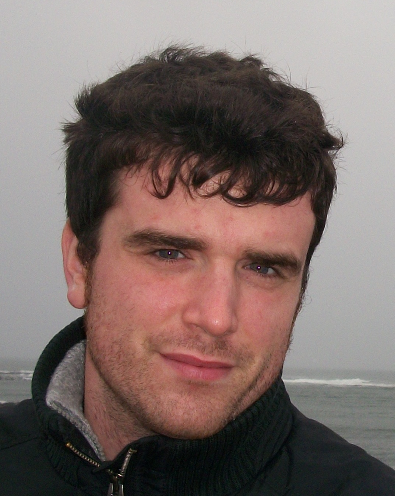

Claudio Menghi
Mail: claudio.menghi@uni.lu I'm a Research Associate at SnTInterdisciplinary Centre for Security, Reliability and Trust
University of Luxembourg
Short bio
I received my BSc and MSc degrees in computer science from the Politecnico di Milano where I later obtained my Ph.D. degree under the supervision of Prof. Carlo Ghezzi in 2015. From 2017 to 2018, I was a Postdoctoral Researcher at the University of Gothenburg and Chalmers where I worked on the Co4Robots project (http://www.co4robots.eu/). I am now a Research Associate at the University of Luxembourg.My research interests are in the field of formal methods and software engineering, with specific interests in cyber-physical systems, robotics, and formal verification. I have spent several years doing research with industry and applying formal methods and software engineering techniques in real-world and industrial contexts. In particular, I have led research projects with four industry partners: BOSH and PAL Robotics in the robotics domain, and LuxSpace and QRA, Canada in the aerospace and cyber-physical domain.
Research Philosophy
My research interests are in the areas of formal methods, automated verification and software engineering. I believe that the interplay among these research areas is one of the keys to have successful and impactful research. Software engineering concerns the systematic application of engineering approaches to the development of software. As such it should rely on rigorous mathematically founded techniques. Formal methods are mathematical approaches to software and system development that support the rigorous specification, design, and verification of computer systems. As such they should consider realistic software engineering assumptions. For this reason, I support cross-disciplinary research and collaborations among research fields and groups.Having a close collaboration with industry allows the definition of research problems (and assumptions) of practical relevance and enables a realistic and credible evaluation of the research. Furthermore, collaboration with industry highlights the limitations of current research solutions and leads to new research challenges. For this reason, I support cross-cutting research that serves as a bridge between basic and applied research, and foster the development of innovative systems. To this end, I worked in close collaboration with industrial partners that allowed me to align my research with realistic assumptions. I had worked in collaboration with robotic companies, BOSCH in Germany, and PAL Robotics in Spain; an aerospace company, LuxSpace in Luxembourg; and one tool vendor for the aerospace and defense sectors, QRA Corp in Canada.
Previous positions
2017-2018 - I was Postdoc at University of Göteborg.2015-2017 - I was Postdoc at Politecnico di Milano.
2012-2015 - I was PhD student at Politecnico di Milano.